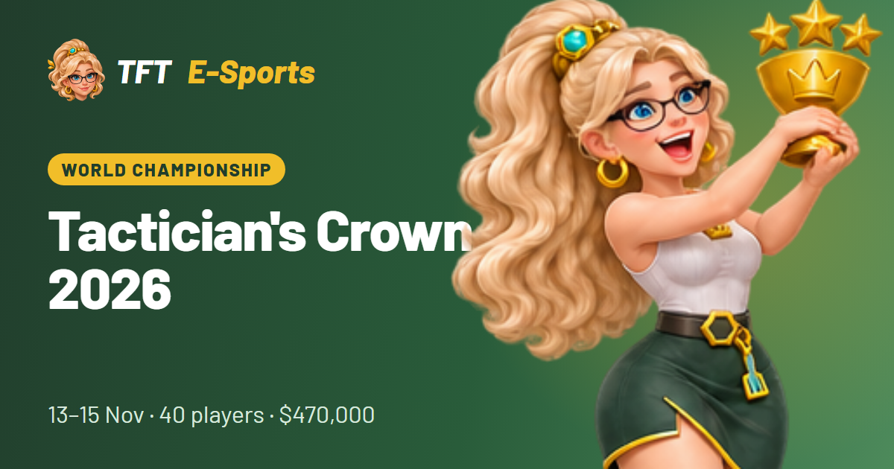

Day 1Fri 13 Nov
Round of 40
Start 12:00 UTC
- 40 players in 5 lobbies
- 6 games, lobbies reshuffled every 2 games
- Top 32 advance
The 40 best TFT players in the world fight for the Enchanted Wilds title.
Watch liveOfficial broadcast on Twitch
The player only loads after your click. From then on Twitch's privacy notice applies.
Riot points to riot.com/TFTCrown for all matches. Co-streamers are announced by @CompeteTFT.
Twitch pauses embedded streams when you switch to fullscreen – press play once and it keeps running. Or watch directly on twitch.tv/teamfighttactics.
Top 32 advance to Day 2 – points carry over.
The World Championship runs over three days, 13–15 November 2026, and each day starts at 1 PM CET (12:00 UTC).

Day 1Fri 13 Nov
Start 12:00 UTC
Day 2Sat 14 Nov
Start 12:00 UTC
Day 3Sun 15 Nov
Start 12:00 UTC
Times are shown for your local time. Riot's official start: 4 AM Pacific / 1 PM CET (12:00 UTC) on all three days.
$470,000 in total
Riot's announcement names a grand prize of $150,000 for the winner. A full breakdown for the other places has not been published.
Players qualify in three ways:
AMER sends 10 players, EMEA 8, APAC 11 and China 11.
Official field according to Riot's Tactician's Crown primer (11 Nov); qualification routes from competetft.com. Riot does not list the route for each Chinese player.
The Enchanted Wilds Tactician's Crown runs from 13 to 15 November 2026. Each day starts at 4 AM Pacific / 1 PM CET (12:00 UTC), according to Riot.
Riot points to riot.com/TFTCrown for all matches; the broadcast runs on Twitch at twitch.tv/teamfighttactics. You can start the player on this page.
40 players from all regions. After Day 1 the top 32 remain, and 8 players reach the final.
The prize pool is $470,000. Riot's announcement names a grand prize of $150,000 for the winner.
The final uses the checkmate format: the first player to reach 20 points and then win a game becomes champion.